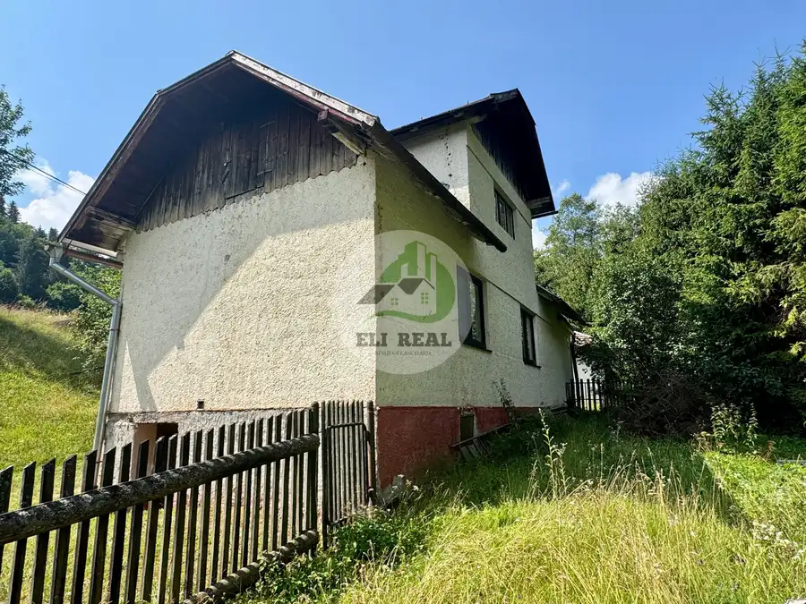
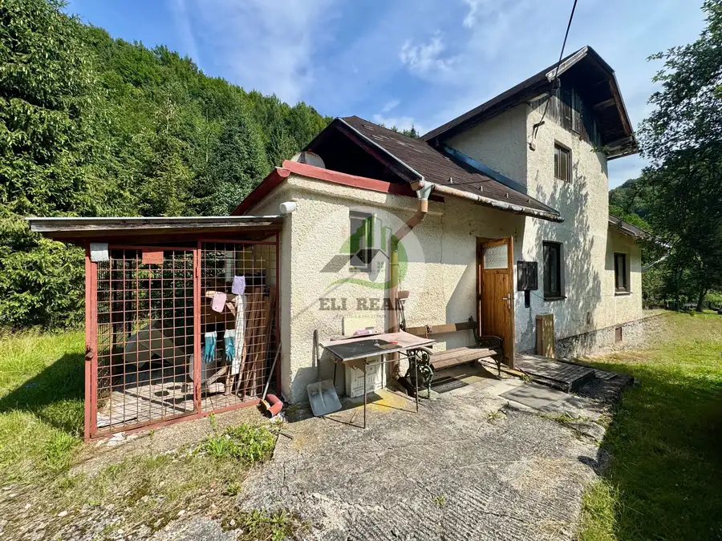
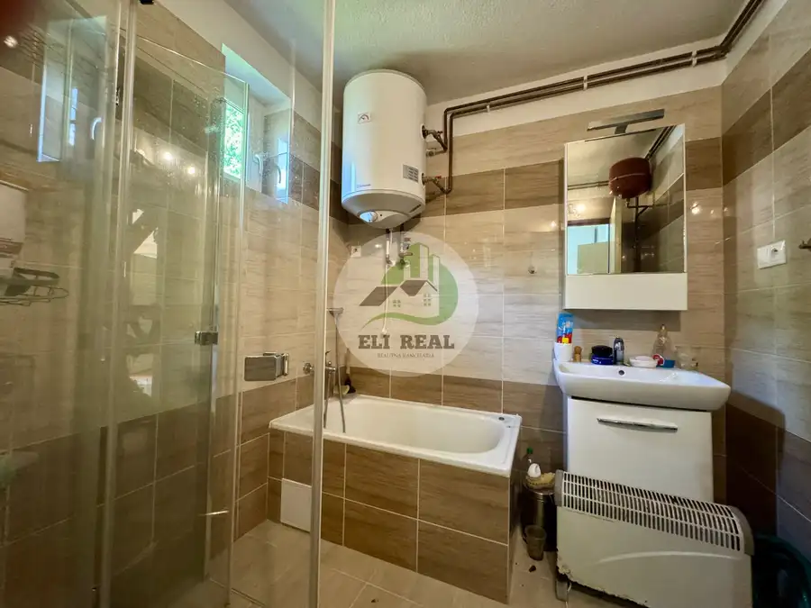

Rodinný dom vhodný aj ako chalupa Gelnica
Gelnica




- Plocha72 m²
- StavČiastočná rekonštrukcia
- VlastníctvoOsobné
O nehnuteľnosti
ZNÍŽILI SME CENU!Hľadáte dokonalý únik z mestského kolobehu, ticho, les a čistý vzduch? Ponúkame na predaj útulný dom ideálny na chalupárčenie (alebo celoročné bývanie) v mimoriadne vyhľadávanej a tichej lokalite Perlová dolina, len na skok od Gelnice.Tento dom spája tradičnú atmosféru s moderným komfortom po nedávnej rekonštrukcii a ponúka bohaté príslušenstvo na pozemku pre všetkých kutilov či záhradkárov.Lokalita: Perlová dolina, okres Gelnica (vyhľadávaná, tichá lesná lokalita)Typ nehnuteľnosti: Rodinný dom / chalupa vhodná na rekreáciu aj celoročné bývaniePôvodná cena: 95000 €Pozemok - 2989 m2. Zastavana plocha 665 Základné parametre & KonštrukciaStavebný materiál: Kombinácia kvádra a dreva (ponúka výborné izolačné vlastnosti a autentický vzhľad)Strešná krytina: kanadský šindelStav nehnuteľnosti: Čiastočná rekonštrukcia pred cca 4 rokmi Čo bolo rekonštruované (pred cca 4 rokmi)Kúpeľňa a WC: Kompletná obnova (moderná sanita, nové obklady a dlažba)Okná: Nové plastové okná Podlahy: Položené nové podlahy v obytných miestnostiach Príslušenstvo & Benefity na pozemkuDrevený altánok: Perfektné miesto na vonkajšie posedenie, relax a grilovanie za každého počasiaGaráž: Bezpečné parkovanie pre vozidlo alebo na uskladnenie bicyklov a záhradnej technikyDielňa: Samostatný, praktický priestor pre každého kutilaDreváreň: Suché a pripravené úložisko na zásoby palivového drevaChliev: Tradičná hospodárska stavba s možnosťou alternatívneho využitia alebo chovu zvierat Vykurovanie & SieteKachľová pec: Tradičné, rýchle a úsporné teplo, ktoré v chalupe vytvára neopakovateľnú atmosféru praskajúceho drevaKúrenie drevom cez pec natiahnuté do radiátorov Okolie a voľný časPríroda: Panenská príroda (turistika, cykloturistika, hubárčenie) pod Kojšovou HoľouDostupnosť: Úplné ticho a les, no zároveň kompletná občianska vybavenosť okresného mesta Gelnica len na skokPrístupová cesta asfaltová (v zime udržiavaná obcou) Kontakt pre obhliadky a informácieMgr. Andrea EliašováTelefón: 0907 946 726E-mail: eliasova@elireal.sk
Parametre
- Druh
- Rodinný dom
- Druh domu
- Klasický dom
- Dátum zverejnenia
- 14. 07. 2026
- Energetický certifikát budovy
- nie je
- Plocha pozemku
- 2989 m²
- Podpivničenie
- Čiastočné
- Počet garáží
- 1
- Počet izieb / miestností
- 3
- Počet kúpeľní
- 1
- Počet nadzemných podlaží
- 2
- Počet pivníc
- 1
- Počet podzemných podlaží
- 1
- Počet spální
- 1
- Počet vonkajších parkovacích miest
- 4
- Prístupová komunikácia
- Asfaltová
- Stav nehnuteľnosti
- Čiastočná rekonštrukcia
- Telekomunikácie
- Satelit
- Terén pozemku
- Mierne svahovitý
- Typ
- Predaj
- Typ konštrukcie
- Drevená, Iná
- Vlastníctvo
- Osobné
- Vybavenie
- Predzáhradka, Pivnica, Garáž, Vonkajšie parkovacie miesto, Sklad, Altánok / posedenie, Dielňa
- Vybavenie objektu
- Štandardné
- Vykurovanie
- Krb
- Zariadenie
- Čiastočne zariadené
- Zastavaná plocha
- 665 m²
- Úžitková plocha
- 72 m²